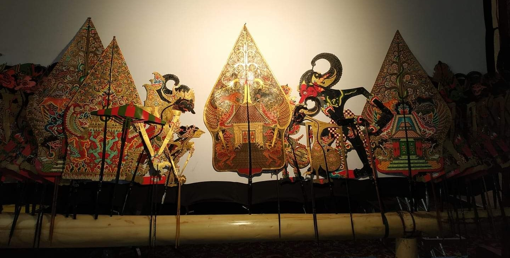
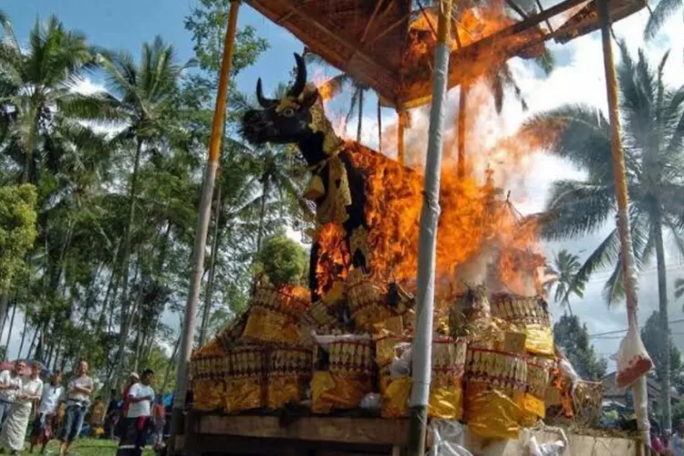

1. Jawa (Wayang Kulit) (Jawa Tengah/Yogyakarta)
Wayang Kulit adalah seni pertunjukan tradisional Jawa yang menggunakan boneka kulit sapi tipis sebagai tokoh. Cerita yang dibawakan biasanya bersumber dari kisah Ramayana, Mahabharata, atau cerita rakyat lokal. Pertunjukan dipimpin oleh seorang dalang yang menggerakkan wayang sekaligus mengisi suara tokoh. Wayang Kulit bukan hanya hiburan, tetapi juga sarana penyampaian nasihat moral, filosofi hidup, dan nilai spiritual. Pertunjukan biasanya berlangsung semalam suntuk dan diiringi musik gamelan.
2. Kalimantan (Gawai Dayak) (Kalimantan Barat)
Gawai Dayak adalah pesta panen suku Dayak yang biasanya dilakukan setelah masa panen padi. Upacara ini merupakan wujud syukur kepada Tuhan atas hasil pertanian yang melimpah. Dalam acara ini, masyarakat mengadakan ritual adat, tarian tradisional, musik khas Dayak, hingga makan bersama. Gawai Dayak juga menjadi ajang silaturahmi antarwarga dan perayaan identitas budaya Dayak.

3. Sumatra (Tari Saman) (Aceh)
Tari Saman berasal dari Suku Gayo, Aceh. Tarian ini biasanya dilakukan untuk merayakan hari-hari besar Islam atau menyambut tamu penting. Penarinya duduk berbaris rapi, lalu menampilkan gerakan tangan, dada, dan kepala secara kompak dengan tempo yang semakin cepat. Tari Saman terkenal sebagai simbol kebersamaan, kekompakan, dan semangat religius masyarakat Aceh. UNESCO bahkan menetapkannya sebagai Warisan Budaya Takbenda Dunia.

4. Bali (Ngaben) (Bali)
Ngaben adalah upacara pembakaran jenazah yang dilakukan umat Hindu Bali. Tradisi ini bertujuan untuk menyucikan roh orang yang meninggal agar bisa kembali ke asalnya (Sang Hyang Widhi). Prosesi Ngaben biasanya dilakukan dengan arak-arakan, gamelan, tarian, serta pembakaran menara jenazah yang megah. Meskipun terlihat meriah, Ngaben bukanlah perayaan kesedihan, melainkan pelepasan roh dengan penuh keikhlasan dan sukacita.
 Instagram
Instagram Twitter
Twitter TikTok
TikTok